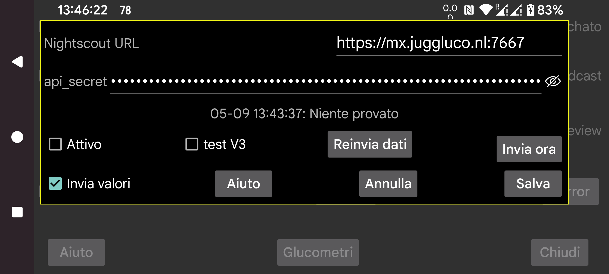

ar be de es fr hi it ja nl pl ru sv tr uk uz zh en
Nella maggior parte dei casi puoi anche usare il webserver in Juggluco o juggluco-server. Solo poche app, che non fanno altro che mostrare la pagina web di Nightscout, hanno bisogno di cgm-remote-monitor. Puoi persino usare AAPS e AAPSClient con il webserver in Juggluco 7.4.1.
Tutti i valori del flusso sono caricati sul server Nightscout quando arrivano. Quando vengono usati più sensori, tutti i valori da ogni sensore vengono caricati. Alcune watchface/app/widget Garmin presumono che i valori siano distanziati di 5 minuti. Quando ricevono valori del glucosio distanziati di un minuto, mostreranno solo l'ultimo quinto della curva. Per questo motivo, il webserver incorporato in Juggluco distanzia i valori di 5 minuti, tranne quando "interval=secs" è impostato su un valore inferiore.
URL: l'url dovrebbe essere nella forma https://hostname:port ad esempio, https://myname.herokuapp.com:6789
Attivo: Attiva l'uploader
test V3: Fa usare a Juggluco api/v3 per caricare su Nightscout. Non usarlo per caricare su un server Nightscout che ha ricevuto in precedenza upload V1 e non inviare upload V1 a un server Nightscout che ha ricevuto in precedenza upload V3. Al posto dell'api_secret devi specificare un Access Token con il permesso di caricare trattamenti ed entries. Puoi crearne uno nell'interfaccia web di Nightscout sotto Admin Tools. (Si chiama "test", perché non esiste alcun altro uploader V3. Normalmente viene usato V1.)
Fornisci valori: Invia anche i valori come trattamenti a Nightscout. Toccando la casella di controllo si arriva a una finestra di dialogo in cui puoi specificare per ogni etichetta cosa significhi in Nightscout. Queste specifiche sono condivise con il webserver in Juggluco (Menu sinistro→Impostazione→Scambio dati→Webserver). Solo quando tutte le etichette sono gestite, puoi selezionare "Fornisci valori". Se aggiungi successivamente una nuova etichetta, devi ricordarti di specificare cosa farne. A causa di un bug in Nightscout, gli inserimenti in periodi di tempo più vecchi o le cancellazioni vengono mostrati solo dopo che sono stati aggiunti elementi con un nuovo orario. Questo significa che è meglio inviare meno spesso a Nightscout. Ora viene fatto ogni volta che l'utente esce da Juggluco spegnendo il display o passando a un'altra app.
Reinvia dati: Carica nuovamente tutti i dati sul server Nightscout
Invia ora: Normalmente i dati vengono inviati immediatamente quando arrivano dal sensore o da una connessione mirror. Premi questo pulsante quando per qualche motivo un tentativo precedente è fallito.
La versione WearOS Juggluco 4.15.0 e successive può anche caricare i valori del glucosio su Nightscout. In quasi tutti i casi è meglio inviarli tramite una versione di Juggluco su un telefono o tablet o tramite Juggluco server su un computer. Scarica la batteria, specialmente quando non è in grado di contattare il server Nightscout, quindi è meglio disattivare Attivo quando non c'è una connessione affidabile.
Due messaggi di errore causano spesso confusione.
Quando il messaggio di errore recita "upload failure:" con nulla dopo i due punti, le possibili cause sono:
La connessione di rete è disattivata;
Il nome host è scritto male.
upload failure: java.io.FileNotFoundException: NIGHTSCOUTURL/api/v1/entries
Qui NIGHTSCOUTURL sta per l'URL del server inserito dopo "Nightscout URL".
Questo è causato da uno dei seguenti:
L'URL punta al sito sbagliato. Ad esempio la porta dopo il nome host è mancante e per questo Juggluco si connette a un normale webserver;
L'api_secret è sbagliato;
NIGHTSCOUTURL contiene un percorso che non dovrebbe esserci. Ad esempio l'URL Nightscout è https://ahost.org:8887 e hai inserito https://ahost.org:8887/extra.